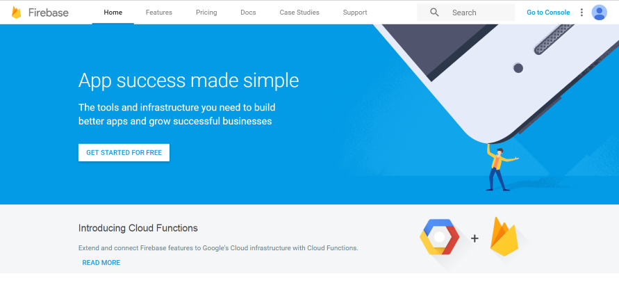
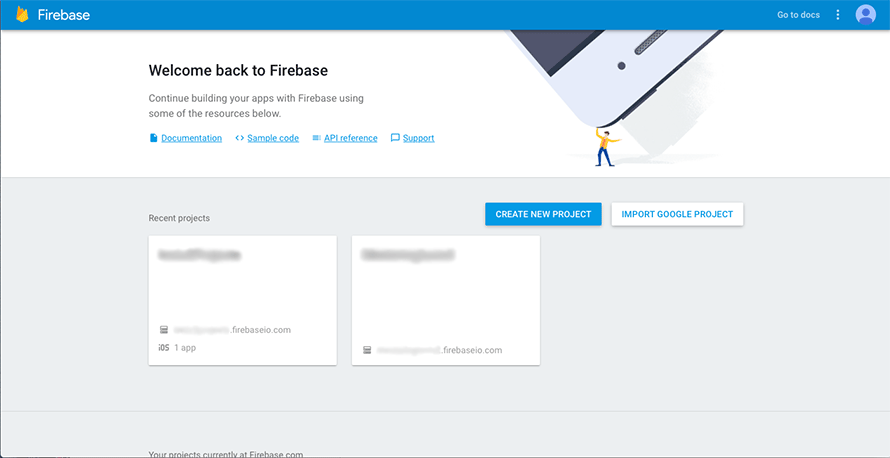

Step 1: Setting up Service Accounts
Before we begin, any steps we take will need you from now on to have downloaded the project from Github. Once you have, we’re ready to go. To make this project work, you will need two accounts, and to do some copy and pasting from your accounts to files to have your own customised application. One is to ensure you can use the application, and another is your database. Both these systems are free to use, but have some restraints, but these won’t affect us here.
First of these is Ionic, which is the framework the applications are built in. You’ll need to sign up on
the Ionic website and download the framework.
You’ll first need to install all the pre-requisites too, But Ionic give a tutorial for doing so,
which if you get stuck, you should follow. Once you’ve done that, on your account page, you should have a blank list of apps
(Or a list of apps if you’ve used the framework before).
From here, create a new App using the new App button, and call it something appropriate, such as “Your Business Here Mobile Ordering”.
Then create a second app named for the application manager,
for example, “Your Business Here Order Management”. You’ll need these names and their app IDs
(found just below the names) in later steps.

Secondly, you’ll need an account on Firebase, which is a Google service. You can start using it with your google account,
or sign up for it on the Firebase Website. Once you have, go to the Console.

Once there, create a new Project and set it to your local region. Once you’ve done that, we'll move on to the next step.